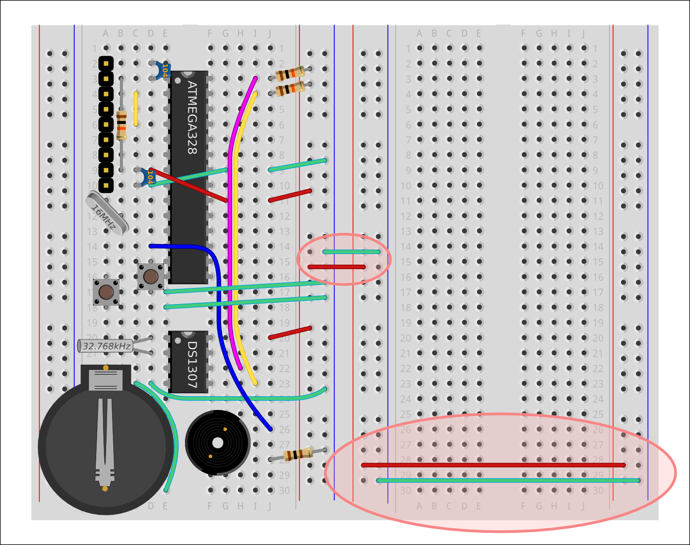
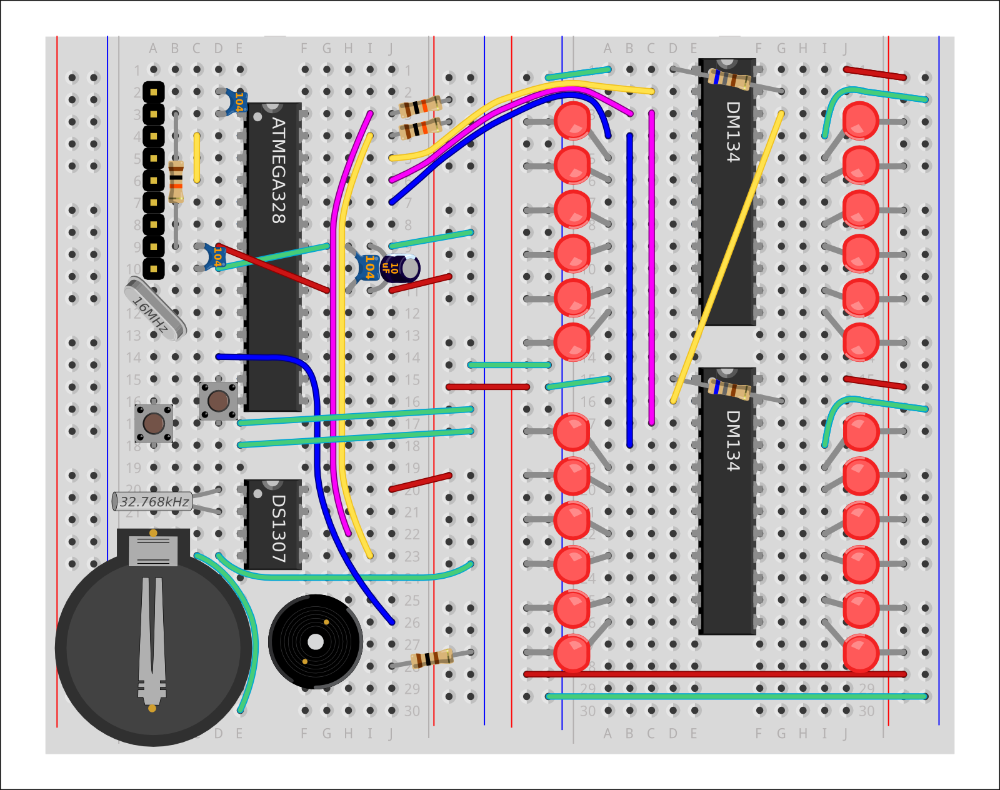

MENU
@ShrimpingIt "LED Clock" Addon Project
Intro
Circuit
Programs
Troubleshoot
Buying
Teaching
Other Projects
...blink an LED
...paint with light
...make a Banana Piano
...test your melody memory
...invent a new Clock
Kits
How to Choose
Product List
Shrimp Bundle
Persistence of Vision
Conductive Keyboard
'Simon' Memory Game
Alarm Clock
Teaching
Workshops
Resources
Testimonials
Special Offers
More
About Us
Contributing
Licensing
Feedback
Contact
Prev
1
2
3
4
5
6
7
8
9
10
11
Next
Building the LED Clock
Getting started
An extra breadboard
Power rails for extra breadboard
First WS2803D LED Driver
Power for the DM134
A 'Reference' Resistor
DM134 I2C Control Wires
Second DM134 chip
24 LEDs
Finished, Upload the code!
Building the LED Clock
Getting started
An extra breadboard
Power rails for extra breadboard

First WS2803D LED Driver
Power for the DM134
A 'Reference' Resistor
DM134 I2C Control Wires
Second DM134 chip
24 LEDs
Finished, Upload the code!
